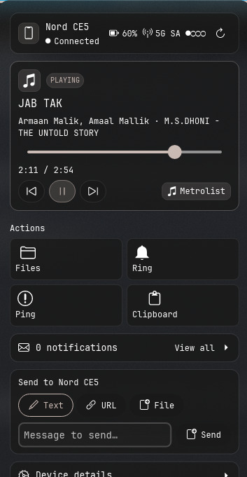
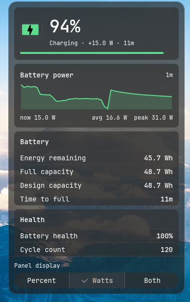
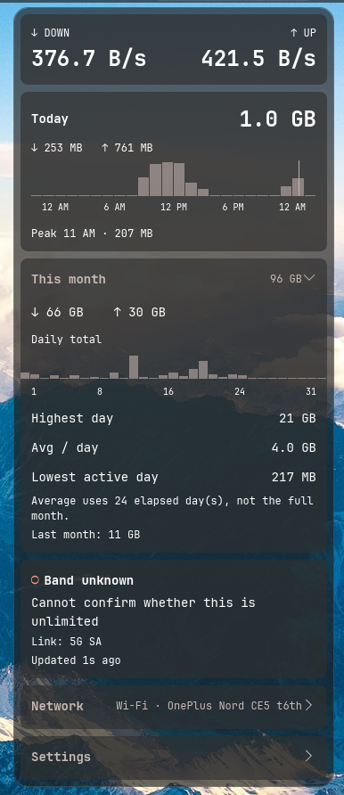
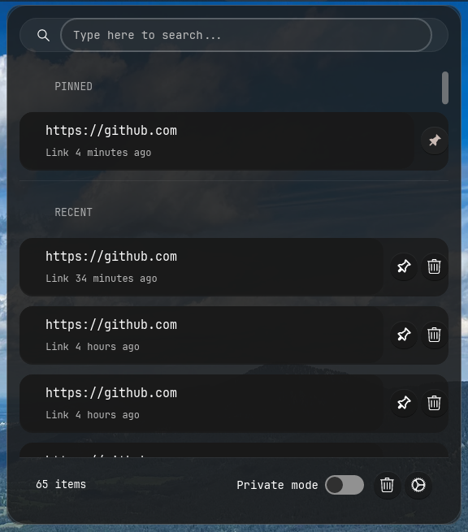

B.E. Computer Science & Engineering
2023 — 2027Government Sri Krishnarajendra Silver Jubilee Technological Institute (SKSJTI), VTU · Bengaluru · 7th semester · CGPA 8.0/10
Final-year Computer Science student, Bengaluru. B.E. CSE at VTU, 2027, CGPA 8.0/10. I write Linux desktop software in Rust and troubleshoot the systems I run it on.
Available for a 3–6 month internship from January 2027
Five repositories. All public, all commit history intact.

KDE Connect wired into the COSMIC panel: pairing, file and text sharing, SFTP browsing, clipboard sync, battery status. Ships a patched KDE Connect fork that adds four D-Bus signals for live transfer progress.
View repository
Live battery charge and discharge power in watts. Reads kernel data from
/sys/class/power_supply four times a second and falls back to
current × voltage when the kernel exposes no direct reading.

Panel applet for live internet speed and monthly data usage. Reads interface counters through Rust and renders them in libcosmic, with connection details and a running monthly total.
View repository
Clipboard history with search, pin-to-top, private mode, and a 48-hour clear that spares pinned entries.
View repositoryBattery charge limiter that surfaces the HP embedded-controller threshold as a panel applet.
View repositoryUsed in the projects above.
/sysDegree, two training programmes, two certificates.
Government Sri Krishnarajendra Silver Jubilee Technological Institute (SKSJTI), VTU · Bengaluru · 7th semester · CGPA 8.0/10
Internshala Trainings · VAPT methodology, OWASP Top 10, network protocols, web and mobile attack vectors · scored 84%
Edunet Foundation, AICTE-certified · core AI concepts and cloud deployment workflows
Bengaluru. Free for a 3–6 month internship from January 2027.
vishwanathsanapur08@gmail.com